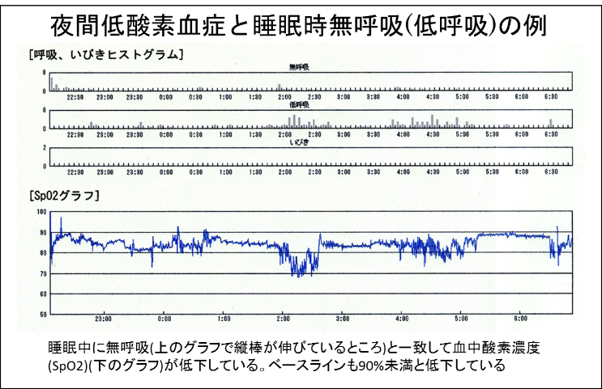
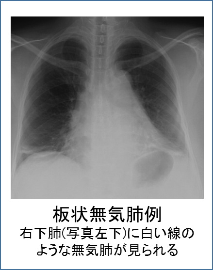

呼吸障害
１．低酸素血症、睡眠時無呼吸、日中過眠、呼吸不全
筋強直性ジストロフィーでは呼吸調節障害があるため、呼吸機能(肺活量)が保たれていても血中の酸素濃度が低下していることがあります。また、睡眠中に無呼吸が高頻度に見られます。睡眠の質が低下するため、日中に眠気(日中過眠)や疲労感が出やすくなります。呼吸筋力が低下すると二酸化炭素の増加も加わります。低酸素血症は様々な臓器に悪影響を及ぼしますが、自覚症状は無く患者様自身が気付かれることはほとんど有りません。しかし、酸素の余裕が乏しいと、軽い感冒でも呼吸状態が急性増悪し生命に危機が及ぶこともあるため要注意です。肺活量などの呼吸機能検査に加え、睡眠中の呼吸状態を定期的に検査することが重要です。また、運動により低酸素血症が改善するか増悪するかを検査するために、運動中の血中酸素濃度や不整脈を検査する(6分間歩行試験、トレッドミルetc)ことも大切です。
治療は非侵襲的呼吸管理(マスクを用いた呼吸管理)が基本ですが、自覚症状が乏しいため治療を面倒に感じて中断する方が多いことが問題です。酸素の投与は呼吸を抑制するリスクがあること、低酸素血症事態の改善も乏しいことから勧められません。一部の薬剤も有効性が報告されていますが保険適応のものはありません。
２．呼吸機能低下、排痰能力低下
病気の進行に伴い呼吸筋力が低下し、肺活量など呼吸機能も低下します。本症では臥位では立位・座位に比べて肺活量が低下することが知られています。また、喉頭機能(喉の機能)が初期から障害されるため、強い咳をすることが困難で痰が出しにくくなります。このため無気肺が生じやすく、レントゲンでは横隔膜の近く(下肺野)に線状の無気肺が多く見られます。こうしたことから、本症では肺をきれいに保つことが困難になります。呼吸理学療法(肺胞拡張訓練、咳嗽(がいそう)補助訓練等)が二次性肺障害の予防に重要で、必要に応じ蘇生バックや排痰補助装置の使用も考慮します。
３．手術の予定がある場合
全身麻酔を伴う手術を予定される場合は、一般的な呼吸機能検査に加え、排痰能力(咳をする力)の検査(ピークフロー)や就寝中の呼吸状態評価の検査を受けましょう。胸部レントゲンやCT等で、肺の状態を確認しておくことも大切です。術前から咳嗽(がいそう)訓練など呼吸理学療法を実施、就寝中の酸素が不安定な患者様では非侵襲的人工呼吸管理の練習をしておかれることを勧めます。